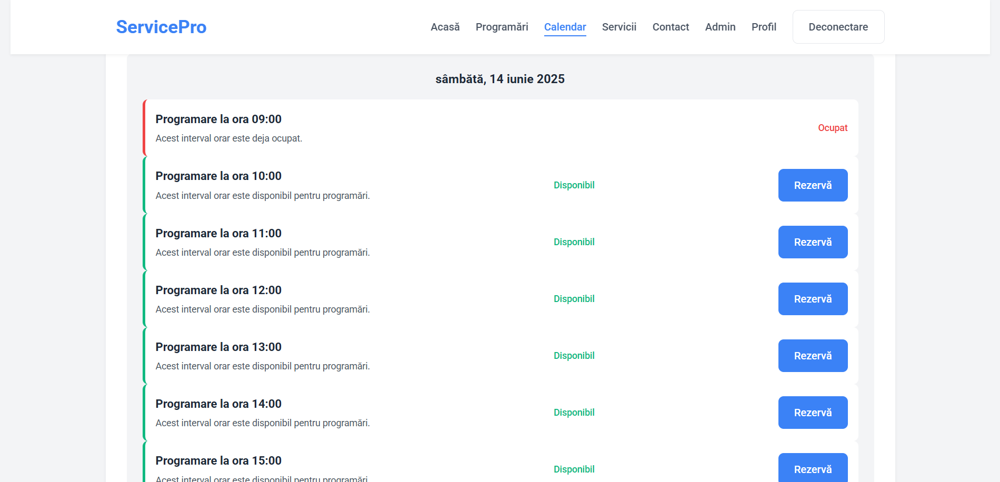
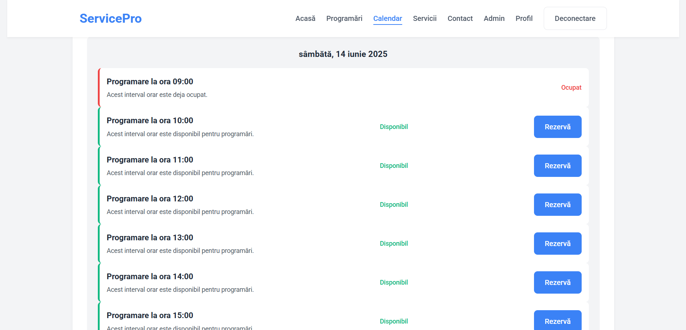
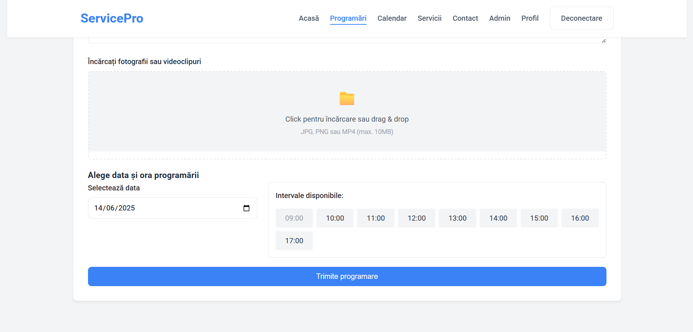
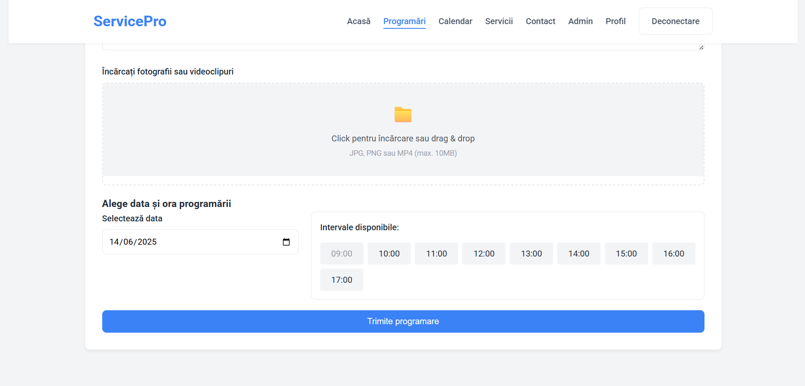

1.1 Purpose
This project provides an online scheduling and inventory management system for motorcycle, bicycle and scooter (electric or traditional) services. The purpose of the application is to:
- Allow them to consult the available calendar and quickly book a time slot, filling out a form with dates, times and details about the technical problem, including attaching photos or videos.
- Provide administrators with a control panel where they can approve or reject appointments, with personalized messages (e.g. "We don't have the necessary items in stock, come back in Z days") and add useful information such as estimated price or warranty.
- Keep track of items stocks.
- Import and export data in CSV formats about items and orders.


 

 
